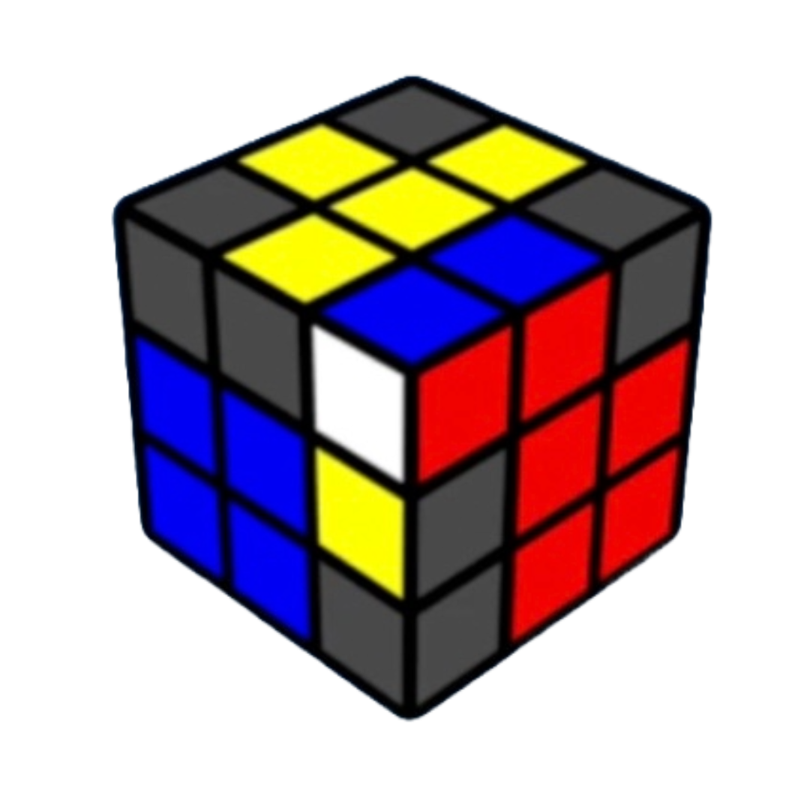
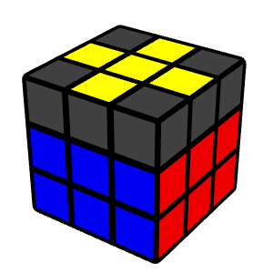

ZB Method
Algorithm sets & trainers.
I use the full ZB method — one of the most advanced 3×3 solving systems in speedcubing. Below you'll find my complete algorithm sheets and interactive trainers for both ZBLL and ZBLS.
F2L Last Pair

ZBLSZborowski-Bruchem Last Slot. A set of 302 algorithms that solve the last F2L pair while orienting the last layer edges simultaneously, setting up for a ZBLL case.
Last Layer

ZBLLZborowski-Bruchem Last Layer. A set of 472 algorithms that solve the entire last layer in one look when all last layer edges are oriented.